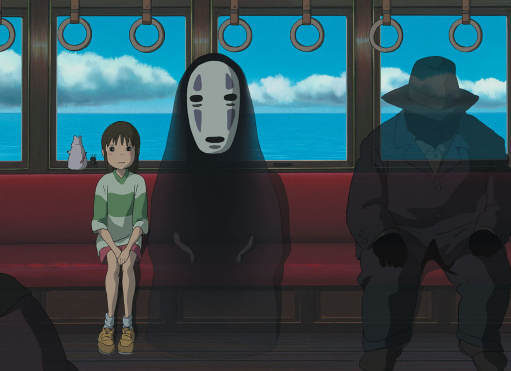

<html lang="fr" class="html" x-data="{MenuIsOpen: false}" style="--marge:1rem">

</html>

<head>
    <meta charset="UTF-8">
    <meta http-equiv="X-UA-Compatible" content="IE=edge">
    <meta name="viewport" content="width=device-width, initial-scale=1.0">
    <title>Mon Nindo</title>
    <link rel="stylesheet" href="../src/css/style.css" rel="stylesheet" href="../src/css/fonts/font.css">
    <script defer src="https://unpkg.com/alpinejs"></script>
</head>


<body>
    <header class="header">

        <div id="start">

            <a href="../VoyageDeChihiro.html"> </a>
            <a href="indexENG.html"> </a>
        </div>

        <div id="end" class="Menu">

            <button aria-controls="MenuPrincipal" @click="MenuIsOpen= !MenuIsOpen">
                
            </button>

            <nav id="MenuPrincipal" x-show="MenuIsOpen" x-transition.duration.800ms>
                <div class="MenuUl">
                    <ul>
                        <p class="Hiro" style="margin-left: 90px;"> ARTICLES</p>

                        <li style="font-size: 24px; margin-bottom:15px;margin-top: 50px;"><a
                                href="NarutoENG.html">Naruto</a> </li>
                        <li style="font-size: 24px;margin-bottom:15px;"><a href="MikiENG.html">Miki Matsubara</a></li>
                        <li style="font-size: 24px;margin-bottom:15px;"><a href="VoyageDeChihiroENG.html">Voyage de
                                Chihiro</a>
                        </li>
                        <li style="font-size: 24px;margin-bottom:15px;"><a href="KyotoENG.html">Kyoto</a></li>
                        <li style="font-size: 24px;margin-bottom:15px;"><a href="MangakasENG.html">Conditions de vie des
                                Mangakas</a></li>
                        <li style="font-size: 24px;margin-bottom:15px;"><a href="StéréotypesENG.html">Stéréotypes
                                japonais</a></li>

                </div>

                <div class="MenuUl">
                    <ul class="Menu2">
                        <P class="Hiro" style="margin-left: 50px;padding-left: 30; ">SECONDAIRES</P>
                        <li style="font-size: 20px; margin-bottom:50px; padding-top: 25px;"><a
                                href="ProjetsENG.html" style="padding-left:5px">Autres
                                Projets</a></li>
                        <li style="font-size: 20px; margin-bottom:50px;  padding-top: 25px;margin-right: 25px;"><a href="GlossaireENG.html"
                                style="padding-left:5px">Glossaire</a></li>
                        <li style="font-size: 20px; margin-bottom:50px;"><a href="ContactENG.html" style="padding-left:5px">Contact</a></li>
                        <li style="font-size: 20px; margin-bottom:50px;margin-right: 25px;"><a href="AProposENG.html"
                                style="padding-left:5px">A Propos</a></li>
                    </ul>
                </div>
            </nav>
        </div>

    </header>
    <div class="gallery2" max-widht="100%" max-height="100%">
        
    </div>

    <h1 class="center">Spirited Away<h1>

            <div class="gallery">
                
            </div>

            <p class="Marge"> Spirited Away or Sen to Chihiro no kamikakushi is a Japanese animation film written by <a
                    href="../Hayao.html" style="color: #63120F;text-decoration:underline">Hayao Miyazaki</a> in 2001 and
                produced by the famous studio Ghibli.
            </p>

            <h2> THE BRILLANT STUDIO GHIBLI</h2>

            <div class="gallery">
                
            </div>

            <p class="Marge">Studio Ghibli is one of the best known studios in its genre, specializing in animated
                films, with many awards to its
                credit.
                Co-founded by Hayao Miyazaki in 1985, he is seen as one of the fathers of the history of animation and
                is seen as an
                accomplished filmmaker.</p>

            <p class="Marge">Wise for a wide audience, The Ghibli's studios hides behind their beautiful stories some
                morals or criticisms of the
                society much deeper and darker than it looks like, making its success and originality.</p>

            <h2> CHIHIRO’S STORY</h2>

            <div class="gallery">
                
            </div>

            <p class="Marge">The film is about Chihiro, a little girl who travels with her family to her new
                house. As they begin to Lost themself on country roads they come across a theme park that seems
                abandoned but during the visit the parents stop
                at a stand presenting a huge banquet. Not reassured, Chihiro decides to run away.</p>

            <p>Later, when she finally find her parents, she sees them transformed into pigs. Suddenly Chihiro finds
                herself taken to a
                nightmarish fairy world, supported by a boy named Haru she meets a witch, at the head of the kingdom of
                shadows.</p>

            <p class="Marge">Through this journey, Chihiro wants to save her parents from the curse and regain her life
                in the real world. With
                dazzling and colorful drawings, we find ourselves in a kingdom wich is in reality an institution that
                aims to host
                Japanese cultural gods by taking care of them.</p>

            <h2> THE DARK SIDE</h2>

            <div class="gallery">
                
            </div>

            <p class="Marge">The film is an indirect criticism of today's society, presenting a kingdom ruled and
                corrupted for and by money,
                employing slaves as workers, referring to the modern world of work.
                The film also denounces the hyper-consumption as well as the difference in lifestyle between the social
                statues</p>

            <div class="gallery2" style="margin-top:60px;">
                
                
                
                
            </div>

</body>

<footer style="margin: 0 -1rem">

    <div class="footer">
        <p style="padding-top:10px ;">Projet réalisé dans le cadre d’un exercice
            pédagogique au département <br> <a href="http://mmimontbeliard.com/" style="text-decoration:underline">MMi
                de Montbéliard</a> </br></p>
        <p> Ayrton chaves</p>
    </div>

    <div class="gallery2" style="padding-bottom: 15px;">
        <a href="https://www.instagram.com/ayrton.chvs/">  </a>
        <a href="https://twitter.com/ayrt_chvs">  </a>
    </div>

</footer>